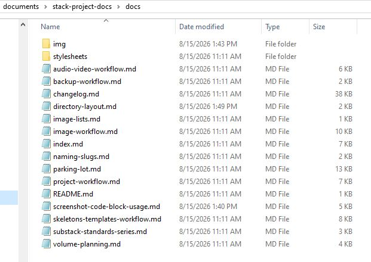

Directory layout
This diagram shows the stack-project-docs GitHub repository structure. All project documents that get pushed to the repository live in the docs/ folder. All images live in the img/ subfolder.
- stack-project-docs/
- .git/
- .github/
- docs/
- audio-video-workflow.md
- backup-workflow.md
- changelog.md
- directory-layout.md
- image-lists.md
- image-workflow.md
- index.md # Home — the site's About... page
- naming-slugs.md
- parking-lot.md
- project-workflow.md
- README.md # Orientation to this doc set
- screenshot-code-block-usage.md
- sharex-notes.md
- skeletons-templates-workflow.md
- substack-standards-series.md
- vintage-rod-workflow.md # related to project-workflow.md with specifics on rod aquisition and documentation
- volume-planning.md
- writing-readme-about-pages.md
- img/
- screencasts/
- screenshots/
- [slug].jpg
- stylesheets/
- extra.css
- mkdocs.yml
- README.md # Orientation to the repo
- requirements.txtThe following screenshots show what the structure actually looks like in Windows Explorer.

docs/img asset folders in the local stack-project-docs repository
docs/ asset folder and files in the local stack-project-docs repository